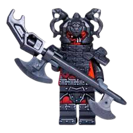
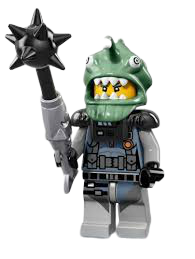
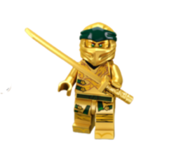

|
Curiosidades
|
|  |
LORD GARMADON |
| Luego de ser mordido por el Gran Devorador cuando era niño, el hermano de Wu se volvió perverso y se convirtió en Lord Garmadon. Cuando su hijo Lloyd acabó con la amenaza que representaba el Señor Supremo, Garmadon logró librarse finalmente del veneno que corría por sus venas. Fue entonces que se convirtió en un afectuoso padre para Lloyd. La última vez que se supo de él, Garmadon se había sacrificado para salvar el mundo de NINJAGO® y se perdió en el Reino Maldito. |
|  |
HUTCHINS |
| Es el maestro de armas de la familia real de la ciudad de NINJAGO®. Puede parecer muy estricto y reservado, pero Hutchins es un hombre valiente y leal. Controla todo tipo de armas, y aunque de manera severa, ha enseñado a todos nuestros héroes todas las técnicas de ninja que conoce. Cuenta la leyenda que fue tocado por el fuego del último dragón, de ahí tanta sabiduría. |
|  |
GOLDEN NINJA LLOYD |
| Zane, el antiguo ninja blanco, con nueva y elegante indumentaria, es un inteligente y poderoso nindroide (robot ninja) que desempeña la función de inteligencia computacional en el grupo. Fue creado por el Dr. Julien para proteger a quienes no podían protegerse a sí mismos. Entregado a la paz, la libertad y el coraje, este racional ninja es valeroso y atento, y tiene un gran corazón… ¡aunque no tenga ninguno! |
Las armas más sagradas del reino de NINJAGO son la Espada de Fuego, los Nunchakus del Rayo, los Shurikens de Hielo y la Hoz de los Temblores:
las Cuatro Armas Doradas del Spinjitzu.
Forjadas por el Primer Maestro del Spinjitzu para crear y proteger el mundo de NINJAGO, las poderosas armas fueron heredadas por los dos hijos del Maestro, Garmadon y Wu. Pero Garmadon conspiró para usarlas en beneficio de sus propios planes malvados y Wu se vio obligado a desterrarlo al Inframundo y ocultar las armas.
Cuando Garmadon regresó con los esqueletos para atacar el mundo de NINJAGO y gobernarlo, Wu encomendó una misión a los ninjas Kai, Cole, Zane y Jay: recuperar las cuatro armas y restaurar la paz.
DESCUBR LOS SECRETOS DE NINJAGO®
|